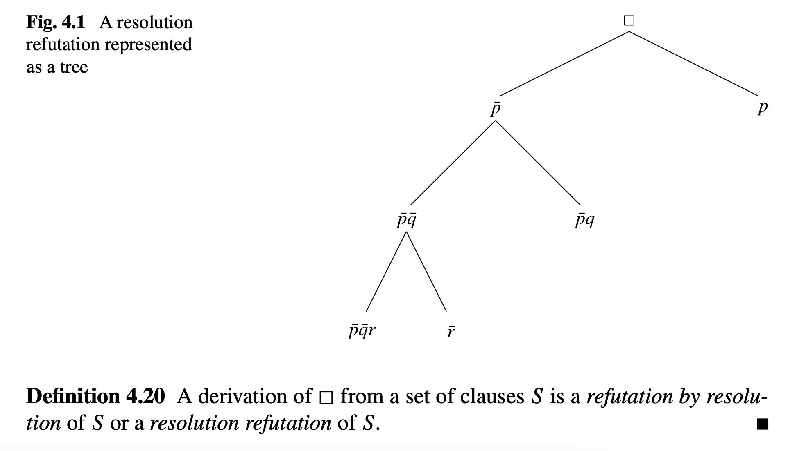

2025-06-02
We define propositional logic (Ben-Ari 2012) as a formal system consisting of:
\({\mathcal{P}}\): a countably infinite set of elements called propositional symbols. These are alternately referred to as propositional variables, atomic propositions or just atoms.
\(\Omega\): set of logical operators or connectives.
For example, we traditionally have \(\Omega=\{\wedge, \vee, \neg\}\). A formula is defined as a sentence over propositional variables conjoined via the operators of \(\Omega\). We can define the the set of syntactically valid formulas via a formal grammar. We let \(\mathcal{F}\) be the set of all such formulas.
For a formula \(A \in \mathcal{F}\), where \({\mathcal{P}}_A\) is the set of atoms that appear in \(A\), an interpretation for \(A\) is a total function \[\begin{aligned} \mathcal{I}_A : {\mathcal{P}}_A \rightarrow \{True,False\} \end{aligned}\] that assigns one of the truth values, True or False, to every atom in \({\mathcal{P}}_A\). In other words, it’s just an assignment of boolean values to propositional variables. The truth value of a formula \(A\) under an interpretation \(\mathcal{I}_A\), denoted \(v_{\mathcal{I}_{A}}(A)\), is defined in the standard way. That is, just plug in the values for each propositional variable as given by the interpretation function \(\mathcal{I}_A\) and then evaluate the formula according to the semantics of the standard logical connectives. Note that although this is the “classical” notion of intepretation for propositional logic, we could have a more general notion of intepretation that allows for an intepretation function \(\mathcal{I} : \mathcal{P}_A \rightarrow D\) that maps propositional symbols to some arbitrary domain of values. The logical connectives contained in \(\Omega\) must then also be given appropriate semantics in accordance. For example, three-valued, many-valued logic systems.
For a formula \(A \in \mathcal{F}\) we have the following definitions:
\(A\) is satisfiable iff \(v_{\mathcal{I}_{A}}(A) = True\) for some intepretation \(\mathcal{I}\). A satisfying intepretation is called a model for \(A\).
\(A\) is valid iff \(v_\mathcal{I}(A)=True\) for all intepretations \(\mathcal{I}\).
\(A\) is unsatisfiable iff it is not satisfiable i.e. if \(v_\mathcal{I}(A)=False\) for all interpretations \(\mathcal{I}\).
Determining the validity of a propositional formula \(\phi \in \mathcal{F}\) (i.e. checking if it is a tautology) can be done by checking the unsatisfiability of \(\neg \phi\) i.e. \[\begin{aligned} \phi \text{ is valid} \iff UNSAT(\neg \phi) \end{aligned}\] That is, we check if there are any interpretations that violate \(\phi\). If there are none, then \(\phi\) must be true under all interpretations i.e. \(\phi\) is a tautology.
Determining any of the above properties for a propositional formula is a decidable problem, since we can easily enumerate the finite (exponentially many) number of possible intepretations for a formula to determine whether it is satisfiable/valid/unsatisfiable. The satisfiability problem for propositional formulas is known as the SAT problem, and is NP-complete. In some special cases satisfiability can be solved in polynomial time e.g. 2-SAT (where CNF clauses contain 2 variables) is in P, as is HORNSAT (where clauses have at most one non-negated literal). The 3-SAT problem, however, is NP-complete. The problem of checking validity/tautology of propositional formulas is co-NP-complete.
For a set of formulas \(U=\{A_1,\dots\}\), a model of \(U\) is an interpretation \(\mathcal{I}\) such that \(v_\mathcal{I}(A_i)=True\) for all \(A_i \in U\). For a given formula \(A\), we say that \(A\) is a logical consequence of U, denoted \(U \vDash A\), iff every model of \(U\) is a model of \(A\). That is, for any interpretation that is a model of \(U\), it is also a model of \(A\).
Let \(U\) be a set of formulas. We say that \(U\) is closed under logical consequence iff for all formulas \(A\), if \(U \vDash A\), then \(A \in U\). A set of formulas that is closed under logical consequence is called a theory. The elements of \(U\) are theorems. Theories are typically constructed by selecting a set of formulas called axioms and deducing their logical consequences. For a given set of formulas \(U\), we say that \(U\) is axiomatizable iff there exists a set of formulas \(X\) such that \(U = \{A \mid X \vDash A\}\). That is, there exists a set of formulas \(X\) such that every formula in \(U\) can be deduced as a logical consequence of the formulas in \(X\). The set of formulas \(X\) are the axioms of \(U\). If \(X\) is finite, then \(U\) is said to be finitely axiomatizable.
Using a purely semantical approach to determining the validity of formulas in propositional logic can have various drawbacks. For example, not all logics have decision procedures like propositional logic. Thus, we can use an alternate, deductive approach.
A deductive system is a set of formulas called axioms and a set of rules of inference. A proof in a deductive system is a sequence of formulas \(S = \{A_1,\dots,A_n\}\) such that each formula \(A_i\) is either an axiom or it can be inferred from previous formulas of the sequence \(A_{j_1},\dots,A_{j_k}\), using a rule of inference. For \(A_n\), the last formula in the sequence,we say that \(A_n\) is a theorem, the sequence \(S\) is a proof of \(A_n\), and \(A_n\) is provable, denoted \(\vdash A_n\). Note that even if there is no decision procedure to discover a proof, it can be mechanically checked i.e. using a syntax based approach to check that each applied inference rule is valid.
Proving soundness and completeness of a deductive system \(\mathcal{D}\) means showing that for any formula \(A\), \[\begin{aligned} \vDash A \iff \vdash A \end{aligned}\] for \(\mathcal{D}\). That is, if \(A\) is valid (in a semantical sense), then \(A\) is provable in \(\mathcal{D}\), and vice versa. A deductive system \(\mathcal{D}\) is sound if any provable statement in \(\mathcal{D}\) is a true statement i.e. if \(\vdash A\) then \(\vDash A\).
The method of resolution is an efficient method for searching for a proof. More precisely, it is a decision procedure for unsatisfiability in propositional logic.
Assume we have a propositional formula given in clausal form, which is basically just conjunctive normal form (CNF) where each clause is viewed as a set of literals. This representation doesn’t discard any essential information from the CNF representation, since a CNF formula is a conjunction of clauses, and the order doesn’t matter for either the overall conjunction or the disjunctions within each clause. For example, the following formula in CNF \[\begin{aligned} (a \vee b) \wedge (b \vee \neg c \vee b) \end{aligned}\] is written in clausal form as \[\begin{aligned} \{\{a,b\},\{b,\neg c\}\} \end{aligned}\] A clause is trivial if it contains a pair of clashing literals i.e. if it contains both a literal and its negation. That is, \((x \vee \neg x) \iff True\), so \(\{x, \neg x\}\) can always be removed from a clause without changing the truth value of the clause. We consider the empty clause to be unsatisfiable, and denote it as \(\square\). We consider the empty set of clauses, \(\emptyset\). to be valid.
Now, we say that two clauses \(C_1,C_2\) are clashing if there are literals \(l \in C_1\) and \(l^c \in C_2\), where \(l^c\) is the complement of the literal \(l\) (i.e. if \(l=p\), then \(l^c=\bar{p}\)). We say that \(C_1,C_2\) clash on the pair of literals \(l,l^c\). We define the resolvent of \(C_1\) and \(C_2\) as the clause \[\begin{aligned} Res(C_1,C_2) = (C_1 - \{l\}) \cup (C_2 - \{l^c\}) \end{aligned}\] and \(C_1\) and \(C_2\) are the parent clauses of \(C\). That is, the resolvent \(C\) is produced by removing \(l\) and \(l^c\) from their respective clauses \(C_1,C_2\), and then taking the union of the two resulting clauses.
For example, the clauses \(C_1=ab\bar{c}\) and \(C_2=bc\bar{e}\) clash on the pair of literals \(c\) and \(\bar{c}\). The resolvent is \[\begin{aligned} Res(C_1,C_2) &= (ab\bar{c} - \{\bar{c}\}) \cup (bc\bar{e} - \{c\})\\ &=ab \cup b\bar{e}\\ &=ab\bar{e}\\ &=\{a,b,\bar{e}\} \end{aligned}\]
Note that resolution is only performed if the pair of clauses clash on exactly one pair of complementary literals. The important thing to note is that the resolvent \(C\) is satisfiable iff the parent clauses \(C_1\) and \(C_2\) are both satisfiable. Thus, the resolution procedure then basically proceeds by taking in a set of clauses \(S\) and repeatedly applying this resolution rule. That is
Choose a pair of clashing clauses \(\{C_1,C_2\} \subseteq S_i\) that has not been chosen before.
Compute \(Res(C_1,C_2)\).
If \(C\) is not a trivial clause, let \(S_{i+1}=S_i \cup \{C\}\). Otherwise \(S_{i+1}=S_i\).
Terminate the procedure if either:
\(C=\square\)
All pairs of clashing clauses have been resolved.
See Figure 1 for an example of a resolution proof for the clause set \(S=\{p,\bar{p}q, \bar{r}, \bar{p} \bar{q}r\}\) where the rule applications are represented as a tree, leading to the unsatisfiable clause.

Note that an alternative way to state the resolution inference rule is in terms of implication, where \(c\) is a literal. Note that the following variants of the resolution rule are all equivalent, some of which make the intuition behind the rule a bit clearer (where the upper formulas represent the premises and lower represents the conclusion):
| \(A \vee c\) | \(B \vee \neg c\) |
|---|---|
| \(A \vee B\) | |
| \(\neg A \Rightarrow c\) | \(c \Rightarrow B\) |
|---|---|
| \(\neg A \Rightarrow B\) | |
| \(\neg c \Rightarrow A\) | \(c \Rightarrow B\) |
|---|---|
| \(A \vee B\) | |
For example, in the second variant, the conclusion \(\neg A \Rightarrow B\) is equivalent to \(A \vee B\), and also note the “case-splitting” aspect of the third statement i.e. we know that either \(c\) or \(\neg c\) must hold, and so if we know that \(\neg c \Rightarrow A\) and \(c \Rightarrow B\), then \(A\) or \(B\) must be true.
First order logic extends propositional logic to include quantification over some specified domain, in addition to a more general notion of interpretation for a given formula.
In order to define the structure of first order formulas, we first define the following:
\(\mathcal{P}\): a countable set of predicate symbols (alternately relation symbols)
\(\mathcal{A}\): a countable set of constant symbols.
\(\mathcal{V}\): a countable set of variables.
The sets of predicate and constant symbols, \((\mathcal{P}, \mathcal{A})\), are also collectively referred to as the signature of a first order logic. Each predicate symbol \(p^n \in \mathcal{P}\) has an arity, which is the number \(n \geq 1\) of arguments that it takes. Note that these predicate symbols are merely syntactic objects i.e. they are not relations, semantically. Rather, they are given semantics under an interpretation (described below), which assigns a relation of the proper arity to each predicate symbol. Note that we can optionally augment the above list to include function symbols, which also have a specified arity similar to predicate symbols, but it is not necessary to give a basic definition of first order logic. This extension to function symbols is also discussed below.
An atomic formula of first order logic is an \(n\)-ary predicate followed by a list of \(n\) arguments \(p(t_1,\dots,t_n)\), where each argument \(t_i\) is either a variable or a constant. A formula of first order logic is defined as strings generated by the following grammar: \[\begin{aligned} &argument& &::= x \qquad &\text{for any } x\in \mathcal{V}\\ &argument& &::= a \qquad &\text{for any } a\in \mathcal{A}\\ &argument\_list& &::= argument\\ &argument\_list& &::= argument,argument\_list\\ &atomic\_formula& &::= p(argument\_list) \qquad &\text{for any $n$-ary } p\in \mathcal{P}\\ \\ &formula& &::= atomic\_formula\\ &formula& &::= \neg \, formula\\ &formula& &::= formula \vee formula\\ &formula& &::= \exists x \, formula \qquad &\text{for any } x \in \mathcal{V}\\ &formula& &::= \forall x \, formula \qquad &\text{for any } x \in \mathcal{V} \end{aligned}\] Note that for a formula \(A\), an occurrence of a variable \(x\) in \(A\) is a free variable of \(A\) iff \(x\) is not within the scope of a quantified variable. A variable which is not free is bound. If a formula has no free variables, it is closed.
In propositional logic, an interpretation is a mapping from atomic propositions (i.e. propositional variables) to truth values (i.e. \(\{True, False\}\)). In first order logic, the analogous concept is a mapping from atomic formulas to truth values. The atomic formulas of first order logic, however, contain variables and constants that must be assigned elements of some domain. In propositional logic, each atomic proposition is assumed to be boolean-valued, so this is not a concern. That is, the “domain” of each propositional variable is implicitly assumed to be the truth values \(\{True,False\}\). In first order logic, this is generalized by allowing variables to range over specified domains.
Let \(A\) be a formula of first order logic where \(\{p_1,\dots,p_m\}\) are all the predicates appearing in \(A\) and \(\{a_1,\dots,a_k\}\) are all the constants appearing in \(A\). An interpretation \(\mathcal{I}_A\) for a formula \(A\) is a triple consisting of the following:
\(D\): a non-empty set called the domain
\(\{R_1,\dots, R_m\}\): a set of relations on \(D\), where \(R_i\) is an \(n_i\)-ary relation on \(D\) (that is, \(R_i \subseteq D^{n_i}\)) assigned to the \(n_i\)-ary predicate symbol \(p_i\).
\(\{d_1,\dots,d_k\}\): a set of constant values, where \(d_i \in D\) is assigned to the constant \(a_i\).
In other words, an interpretation defines a “domain of discourse” \(D\), along with a concrete assignment of relations to each predicate symbol \(p \in \mathcal{P}\) and values from the domain to each constant \(a \in \mathcal{A}\).
For example, if we have \[\begin{aligned} \mathcal{P} &= \{p\}\\ \mathcal{A} &= \{a\}\\ \mathcal{V} &= \{x\} \end{aligned}\] then a first order formula may look like: \[\begin{aligned} \forall x p(a,x) \end{aligned}\] which might contain the following various interpretations: \[\begin{aligned} \mathcal{I}_1 = (\mathbb{N},\{\leq\},\{0\})\qquad \mathcal{I}_2 = (\mathbb{N},\{\leq\},\{1\})\qquad \mathcal{I}_3 = (\mathbb{Z},\{\leq\},\{0\}) \end{aligned}\] where the domain is either the natural numbers, \(\mathbb{N}\), or the integers, \(\mathbb{Z}\), and the binary relation \(\leq\) is assigned to the binary predicate symbol \(p\), and either 0 or 1 assigned to the constant \(a\). We could also have an interpretation over strings e.g. \[\begin{aligned} \mathcal{I}_4 = (Str, \{isPrefix\}, \{``s"\}) \end{aligned}\] where \(Str\) represents the set of all strings, \(isPrefix\) is the binary relation determining if one string is a prefix of another, and “s” is a single character string. This illustrates that the same first order logic formulas can be “imbued” (i.e. interpreted) with various semantics. Furthermore, for an interpretation \(\mathcal{I}_A\) and formula \(A\), an assignment \(\sigma_{\mathcal{I}_A} : \mathcal{V} \rightarrow D\) is a function that maps every free variable \(v \in \mathcal{V}\) to an element \(d \in D\), the domain of \(\mathcal{I}_A\).
For a closed formula \(A\) (no free variables), the truth value of \(A\) under \(\mathcal{I}_A\), denoted \(v_{\mathcal{I}_A}(A)\), is given by “evaluating” the formula in the standard way. That is, evaluating the inner, unquantified formula over each element in the domain, for each quantified variable, plugging into the predicates of the formula and evaluating. We can define these evaluation semantics formally but it is mostly straightforward. For example, the truth value of the closed formula \[\begin{aligned} \forall x \, p(a,x) \end{aligned}\] under the interpretation \[\begin{aligned} \mathcal{I}_1 = (\{0,1\},\{\leq\},\{0\})\qquad \end{aligned}\] evaluates to \(True\) iff \(0 \leq x\) for all \(x \in \{0,1\}\).
Now we define the following for a closed formula \(A\) of first order logic:
\(A\) is true in \(\mathcal{I}\) (alternately, \(\mathcal{I}\) is a model for \(A\)) iff \(v_\mathcal{I}(A)=True\). We denote this as \(\mathcal{I}\vDash A\).
\(A\) is valid if for all interpretations \(\mathcal{I}\), \(\mathcal{I} \vDash A\)
\(A\) is satisfiable if for some interpretation \(\mathcal{I}\), \(\mathcal{I} \vDash A\)
\(A\) is unsatisfiable if it is not satisfiable.
Note that these definitions of validity/satisfiability are a bit more involved than in the case of propositional logic. We must consider a formula under all possible interpretations in order to consider validity. For satisfiability, we may only need to find one adequate interpretation, though we may need to consider/search through many possible interpretations.
Our definition above for defining the structure of first order formulas did not allow for the inclusion of functions i.e. we only allowed predicate symbols. We can generalize this to allow for functions in our first order formulas. Adding functions basically augments the set \((\mathcal{P}, \mathcal{A}, \mathcal{V})\) of predicate symbols, constant symbols, and variables, with a set \(\mathcal{F}\) of function symbols, each with a specified arity, as with predicate symbols. The notion of an interpretation of a formula is thus also augmented, to become a 4-tuple \[\begin{aligned} \mathcal{I} = (D, \{R_1,\dots, R_k\}, \{F_1^{n_1},\dots, F_l^{n_l}\}, \{d_1,\dots,d_k\}) \end{aligned}\] where each \(F_j^{n_j}\) is an \(n_j\)-ary function on \(D\) that is assigned to the function symbol \(f_j^{n_j}\), with the rest of the semantics essentially unchanged. The grammar of formulas is also updated to account for functions, which produce a value in the domain \(D\), rather than a truth value, as predicates do. Note that if we allow for function symbols, then we can simply view constants as functions of arity 0.
In standard first order logic, interpretations are over a single domain \(D\). Many-sorted logic generalizes this to allow for multiple domains, referred to as sorts (Vaananen 2014). That is, a signature is augmented to include a set of sorts, where the arity of each predicate, constant, and/or function symbol now also includes the sort of each of its arguments. An interpretation consists of a triple \[\begin{aligned} (\{D_1,\dots,D_n\}, \{R_1,\dots, R_m\},\{d_1,\dots,d_k\}) \end{aligned}\] where \(\{D_1,\dots,D_n\}\) are domains assigned to each sort.
There is also a notion of stratification of sorts i.e. a total order on all sorts. This is made use of in Ivy (McMillan and Padon 2020) and also discussed in prior work (Abadi, Rabinovich, and Sagiv 2007; Ge and Moura 2009). Sorted first order logic is the basic formalism used, for example, in the original Ivy paper (Padon et al. 2016) that described their modeling language. It is also used as the encoding for TLA+ in TLAPS (Merz and Vanzetto 2016).
In propositional logic, a formula is in conjunctive normal form (CNF) if it is a conjunct of clauses (where a clause is a disjunction of literals). A notational variant of CNF is clausal form i.e. a formula is represented as a set of clauses, where each clause is a set of literals.
We generalize CNF to first order logic by defining a normal form that accounts for quantifiers. We say that a formula is in PCNF (prenex conjunctive normal form) iff it is of the form: \[\begin{aligned} Q_1 x_1 \dots Q_n x_n \, M \end{aligned}\] where \(Q_i\) are quantifiers and \(M\) is a quantifier-free formula in CNF (conjunctive normal form). The sequence \(Q_1 x_1\dots Q_n x_n\) is the prefix and \(M\) is the matrix. Also, let \(A\) be a closed formula in PCNF whose prefix consists only of universal quantifiers. The clausal form of \(A\) consists of the matrix of \(A\) written as a set of clauses.
In propositional logic, every formula can be translated to an equivalent one in CNF, but this is not the case in first order logic. We can, however, transform a formula in first order logic into one in clausal form (i.e. one with only universal quantifiers) without modifying its satisfiability. That is, formally, if \(A\) is a closed formula, then there exists a formula \(A'\) in clausal form such that \(A \approx A'\), where \(\approx\) denotes the equisatisfiability relation. That is, \(A\) is satisfiable iff \(A'\) is. Note that this does not mean that \(A\) and \(A'\) are logically equivalent. The process of transforming \(A\) into such a form \(A'\) is referred to as Skolemization. That is, a formula is in Skolem normal form if it is in prenex normal form with only universal quantifiers.
It is straightforward to first transform \(A\) into a logically equivalent formula in PCNF. The removal of existential quantifiers is the main challenge. The basic idea of Skolemization can be illustrated with a sample formula: \[\begin{aligned} \forall x \exists y : p(x,y) \end{aligned}\] Intuitively, we think of reading the quantifiers as “for all \(x\), find a \(y\) associated with \(x\) such that the predicate \(p\) is true”. This basically matches the intuitive concept of a function. That is, we want a function \(f\) such that \(y=f(x)\). So, the existential quantifier can be removed, giving \(A' = \forall x : p(x,f(x))\).
We say that a set of formulas \(U=\{A_1,\dots\}\) is satisfiable iff there exists an interpretation \(\mathcal{I}_U\) such that \(v_{\mathcal{I}_U}(A_i)=True\) for all \(i\). The satisfying interpretation is a model for \(U\).
A set of formulas \(U\) has the finite model property iff: \(U\) is satisfiable iff it is satisfiable in an interpretation whose domain is a finite set. As one example, let \(U\) be the set of pure formulas (no function symbols) of the form \[\begin{aligned} \exists x_1 \dots \exists x_m \forall y_1 \dots \forall y_n \, A(x_1,\dots,x_m,y_1,\dots,y_n) \end{aligned}\] where \(A\) is quantifier free. Then \(U\) has the finite model property.
Another interesting fact is one due to Löwenheim-Skolem, which says that if a formula of first order logic is satisfiable, then it is satisfiable in a countable domain (Theorem 12.10 in (Ben-Ari 2012)). Thus, countable domains (e.g. the natural numbers) are sufficient for interpretation of first order logic.
Checking validity of a formula in first order logic is undecidable. Even under particular, fixed interpretations, checking validity may be undecidable. For example, Peano arithmetic, which consists of a single constant symbol \(0\), a function symbol \(s\) representing the successor function, and two binary function symbols, \(+\) and \(*\), is undecidable. In addition, a theorem of Trakhtenbrot gives a further refinement. It states that even if we consider first order logic over only the class of finite models, then validity and satisfiability are both still undecidable (Libkin 2004).
Note that Lowenheim’s theorem (Section 2.5) establishes that any satisfiable formula in first order logic is satisfiable in an interpretation with a countable domain. Trakhtenbrot’s theorem is in some sense complementary to this result, since it states that even if we consider only interpretations with finite domains, the validity problem in first order logic is still fundamentally hard i.e. undecidable.
There are, however, interpretations under which validity in first order logic is decidable. The theory of Presburger arithmetic, which includes addition but omits multiplication, is decidable. In addition, checking validity of formulas in monadic predicate calculus are also decidable (Lewis 1980). This is a fragment of first order logic in which all relation symbols are monadic i.e. they take only one argument, and there are no function symbols. That is, all atomic formulas are of the form \(P(x)\), where \(P\) is a relation symbol and \(x\) is a variable.
Other decidable cases of first order logic can be defined by the structure of quantifier prefix. We define a formula of first order logic as pure if it contains no function symbols (including constants which are 0-ary function symbols). There are decision procedures for the validity of pure PCNF formulas whose quantifier prefixes are of one of the following forms: \[\begin{aligned} &\forall x_1\dots\forall x_n \,\exists x_1\dots\exists x_n \\ &\forall x_1\dots\forall x_n \, \exists y \, \forall z_1\dots\forall z_m \\ &\forall x_1\dots\forall x_n \, \exists y_1 \exists y_2 \, \forall z_1\dots\forall z_m \end{aligned}\] which are abbreviated as \(\forall^*\exists^*\), \(\forall^*\exists\forall^*\), \(\forall^*\exists\exists\forall^*\) (Dreben and Goldfarb 1979).
Note that if validity is decidable for a class of formulas, then we can always check if a formula \(\phi\) in this class is satisfiable by checking if \(\neg \phi\) is valid, and applying the following simple rule: \[\begin{aligned} &\neg \phi \text{ is valid} \Rightarrow \phi \text{ is not satisfiable}\\ &\neg \phi \text{ is not valid} \Rightarrow \phi \text{ is satisfiable} \end{aligned}\] Recall that if \(\neg \phi\) is valid this means that there are no satisfying interpretations for \(\phi\). Thus, \(\phi\) is unsatisfiable. If \(\neg \phi\) is not valid, then this means there must be some interpretations that do not satisfy \(\neg \phi\), meaning \(\phi\) must be satisfiable.
Similarly, if satisfiability is decidable for a class of formulas \(F\), then validity should be decidable for the negation of formulas in that class. That is, for any \(\phi \in F\), if checking \(SAT(\phi)\) is decidable, then we can check validity of \(\phi\) by checking \(UNSAT(\neg \phi)\), but \(\neg \phi\) may no longer fall into the decidable class \(F\). So, if SAT is decidable for a formula class \(F\), then for any \(\phi \in F\), we know validity is decidable for \(\neg \phi\), since we can check validity as \(UNSAT(\neg (\neg \phi))=UNSAT(\phi)\), which is decidable since SAT for \(\phi\) is decidable.
For the so-called Bernays-Schönfinkel class, consisting of pure formulas (no function symbols) with prefixes of the form \(\exists^*\forall^*\), satisfiability is decidable (Lewis 1980). This class is alternately referred to as EPR (effectively propositional), since it can be effectively translated into propositional logic formulas by a process of grounding or instantiation. That is, satisfiability for EPR formulas can be reduced to SAT by first replacing all existential variables by Skolem constants, and then grounding the universally quantified variables by all combinations of constants. This process produces a propositional formula that is exponentially larger than the original (Moura, Piskac, and Bjørner 2008).
More precisely, we can decide satisfiability for EPR as follows (Kroening and Strichman 2016), if we consider an example formula like: \[\begin{aligned} \exists e_1 \exists e_2 \forall a_1 \forall a_2 : p(e_1,a_1) \vee q(e_2,a_2) \end{aligned}\]
First, remove the outer existential quantifiers, which we can do since it doesn’t affect satisfiability of the remaining formula, giving \[\begin{aligned} \forall a_1 \forall a_2 : p(e_1,a_1) \vee q(e_2,a_2) \end{aligned}\]
Then, we do a process called grounding, by eliminating each universal quantifier by forming a conjunction of instantiations of the suffix with every possible variable that was originally existentially quantified. Given \(n\) existentially and \(m\) universally quantified variables, this steps results in a formula with \(n^m\) conjuncts. \[\begin{aligned} &(p(e_1,e_1) \vee q(e_2,e_1)) \wedge \\ &(p(e_1,e_1) \vee q(e_2,e_2)) \wedge \\ &(p(e_1,e_2) \vee q(e_2,e_1)) \wedge \\ &(p(e_1,e_2) \vee q(e_2,e_2)) \end{aligned}\]
Now, we are simply left with a boolean combination of uninterpreted predicates. So, all that’s left is to check whether we can assign a boolean value to each such predicate under the constraint that two instances of the same predicate invoked with the same arguments are assigned the same value. So, we can simply encode this as a plain SAT problem where each predicate is encoded with a propositional variable that corresponds to the signature of its parameters e.g. the predicate \(p(e_1,e_2)\) is encoded with a propositional variable \(p_{12}\). This gives us the propositional formula: \[\begin{aligned} &(p_{11} \vee q_{21}) \wedge \\ &(p_{11} \vee q_{22}) \wedge \\ &(p_{12} \vee q_{21}) \wedge \\ &(p_{12} \vee q_{22}) \end{aligned}\]
Then, we just hand this problem to a SAT solver. The formula obtained is equisatisfiable with the original formula. That is, we are simply asking the SAT solver whether there exists a set of value assignments for each predicate that makes the overall statement true.
Since the size of the finite satisfying model for formulas in this class have a computable bound determined by the quantifier prefix, this means we should also be able to check validity of the negation of formulas in this class i.e. those with prefix \(\forall^*\exists^*\), by simply checking satisfiability for all models up to the required bound. If all cases are unsatisfiable, then this should be sufficient to establish validity.